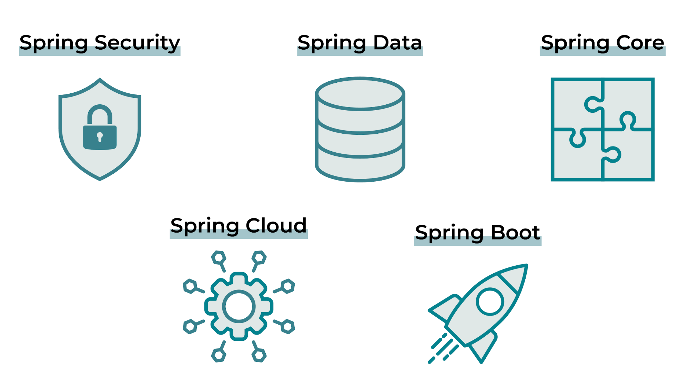

Découvrez le framework Spring
Bienvenue sur la page de découverte du framework Spring!
Spring Framework est un cadre de travail open-source conçu pour simplifier le développement d'applications Java. Il offre un ensemble d'outils et de services qui automatisent les tâches de configuration et de câblage complexes, permettant aux développeurs de se concentrer sur l'écriture de code métier logique.
Fonctionnalités principales de Spring Framework:
- Injection de dépendances
- Gestion des transactions
- Aspect-Oriented Programming (AOP)
- Messagerie
- Sécurité
Les composants de Spring
Spring Core
Il fournit les fonctionnalités essentielles comme la gestion des conteneurs d'objets et l'injection de dépendances, nécessaires pour utiliser la plupart des autres modules Spring. On peut donc le considérer comme un module central.
Spring Data
Ce composant permet de communiquer avec de nombreux types de bases de données. Par exemple, il offre la capacité de communiquer avec une base de données en implémentant uniquement des interfaces grâce à des conventions de nommage
Spring Security
La sécurité est un élément essentiel d'une application. Spring Security permet de gérer l'authentification, l'autorisation et la protection des API.
Spring Cloud
Avez-vous entendu parler de l’architecture microservice ?
Spring Cloud est un ensemble d'outils open-source conçus pour simplifier le développement d'applications distribuées basées sur le framework Spring.
Spring boot
C’est un composant très particulier de Spring Framework, dans la mesure où il nous permet de mettre en œuvre tous les autres.
Ses avantages :
- l'autoconfiguration automatique de Spring ;
- des starters de dépendances ;
- des endpoints Actuator pour fournir des données sur l’application.
En résumé
Spring propose de nombreux composants pour répondre aux besoins des développeurs ! L’un des plus utiles est Spring Boot, car il permet de mettre en œuvre les autres composants de Spring avec facilité, notamment grâce aux starters de dépendances et à l’autoconfiguration.
N'hésitez pas à me contacter si vous avez des questions.